|
<< Click to Display Table of Contents >> Alerts Examples |


|
Alerts Examples
|
<< Click to Display Table of Contents >> Alerts Examples |
|
Following are a few examples of Alerts which can be set up on charts or Market Analyzer windows. Each example shows a different type of alert condition, along with a different action or combination of actions. Feel free to copy and modify these examples for your own uses, or simply use them as a guide to reinforce the material covered on the previous pages.
 Simple Moving Average Crossover
Simple Moving Average Crossover
Preparation•Open a chart •Apply an SMA indicator to the chart
OverviewThis basic alert triggers when the current market price crosses above a 20-period Simple Moving Average. The image below shows the fully configured alert.
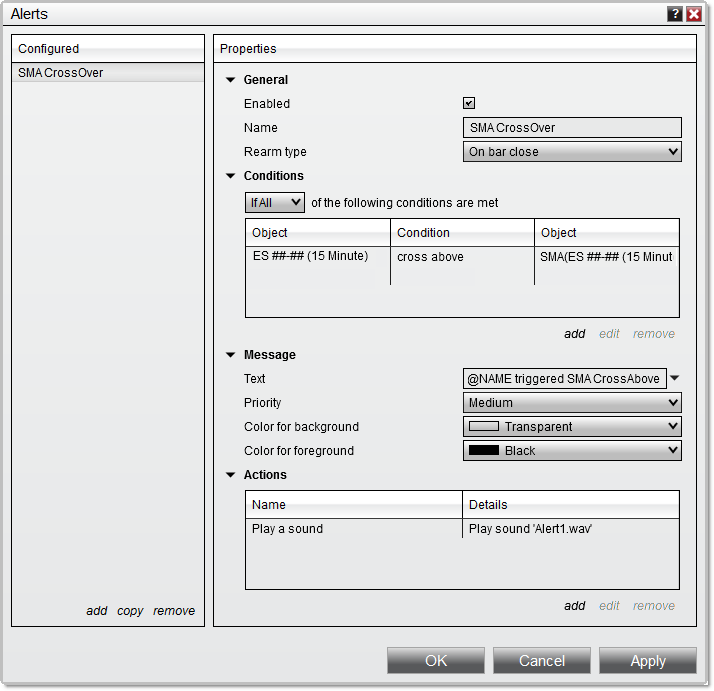Conditions and ActionsThe Conditions and Actions windows for this alert can be seen below:
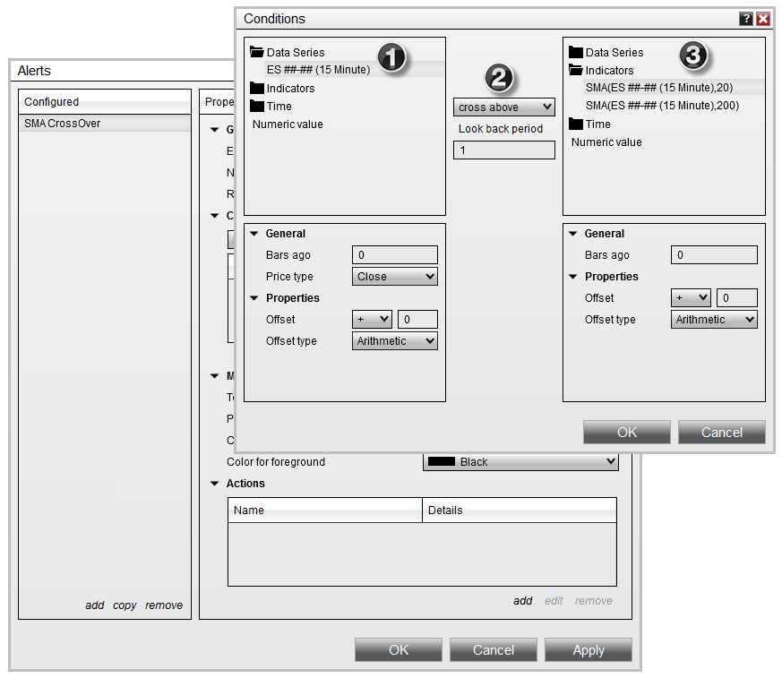1. In the Conditions window pictured above, the ES data series is selected in the left panel
2. The "CrossAbove" condition is selected
3. The 20-period SMA (one of two SMAs applied to the chart) is selected in the right panel
We now have a condition which translates to "When the current price crosses above the 20 SMA." 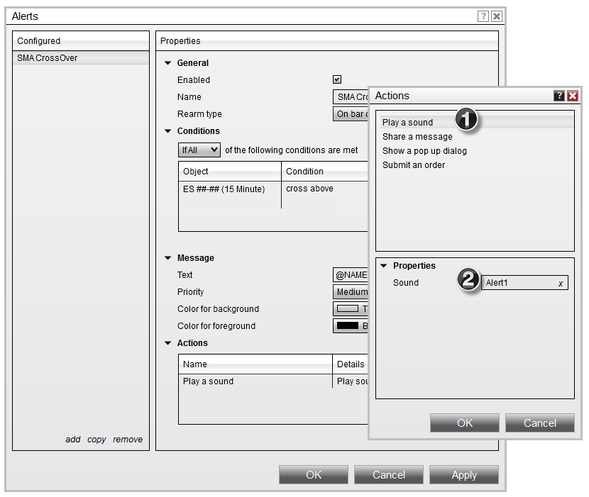1. In the Actions window, the "Play a Sound" option is selected
2. A sound named "Alert1" is selected to be played when the alert triggers |
 Multi-Plot Indicator Crossover
Multi-Plot Indicator Crossover
Preparation•Open a chart •Apply a MACD indicator to the chart •Apply a Stochastics indicator to the chart
OverviewThis alert is a bit more advanced than the example above. This alert demonstrates a multi-plot crossover scenario, detecting when one specific plot of an indicator crosses a different plot of the same indicator. In this example, plots within the MACD and the Stochastics indicators must cross other plots within the same indicators. The image below shows the fully configured alert. 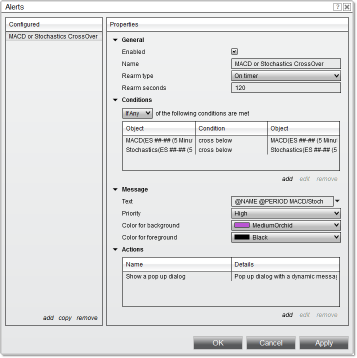Conditions and ActionsThe Conditions and Actions windows for this alert can be seen below: 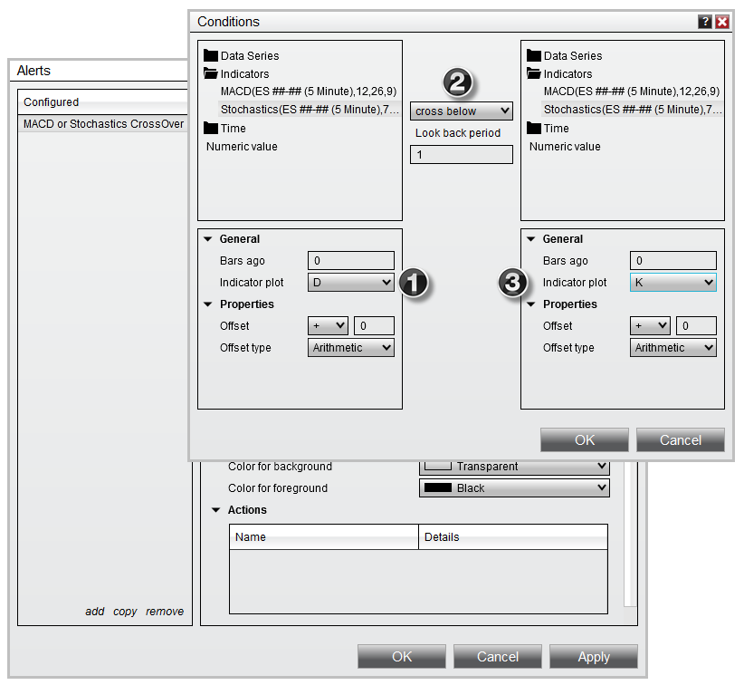1. In the Conditions window, the D plot of the Stochastics indicator is selected in the left panel
2. The CrossBelow condition is selected, and a value of 1 is entered for the look-back period
3. The K plot of the Stochastics indicator is selected in the right panel
We now have a condition that translates to "When Stochastics D crosses below Stochastics K within the last one bar." 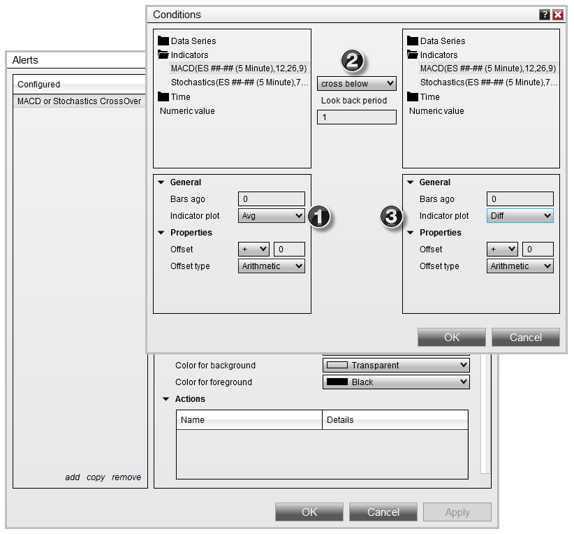1. In the Conditions window for the second condition, the Avg plot of the MACD indicator is selected in the left panel
2. Just like the previous condition, the CrossBelow operator is used with a look-back period of 1
3. The Diff plot of the MACD indicator is selected in the right panel
We now have a second condition that translates to "When MACD Avg crosses below MACD Diff within the last 1 bar." 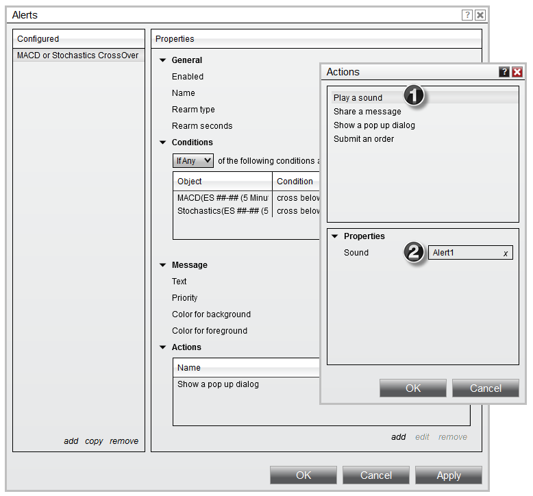1. In the Actions window, the "Play a Sound" option is selected
2. A sound named "Alert1" is selected to be played when the alert triggers |
Preparation•Open a Hot List Analyzer •Populate a Hot List in the window
OverviewThis alert is set up on the Hot List Analyzer, and specifically relates to the Net Change column. Alerts can be set up for other Hot List Analyzer columns in a similar way. The image below shows the fully configured alert.
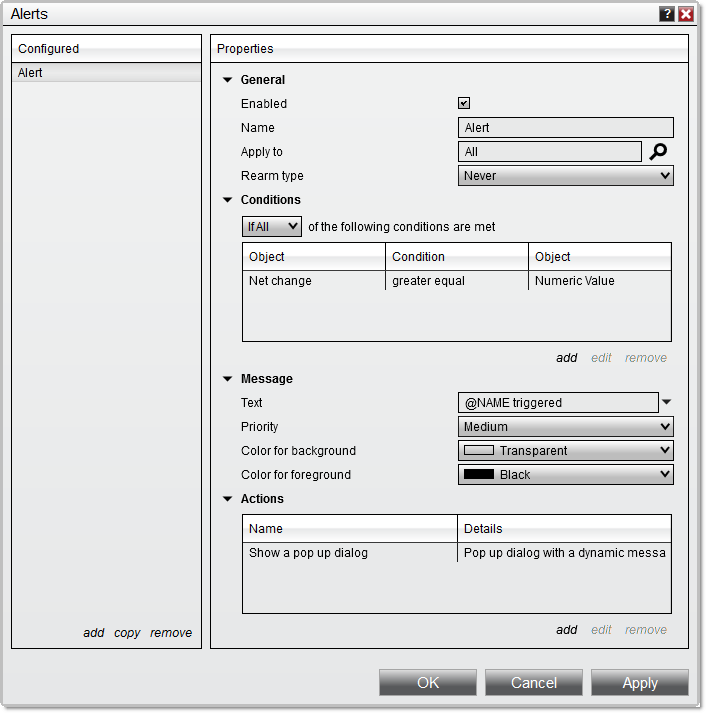
Conditions and ActionsThe Conditions and Actions windows for this alert can be seen below:
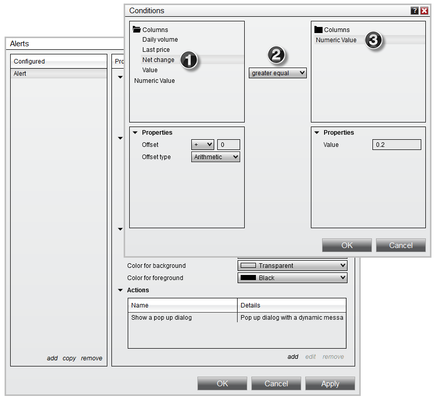
1. In the Conditions window, the Net Change column is selected in the left panel.
2. The Greater/Equal condition is selected
3. The Numeric Value property is selected in the right panel, with a value of 0.2
We now have a condition that translates to "When the value of the Net Change column is greater than or equal to 0.2."
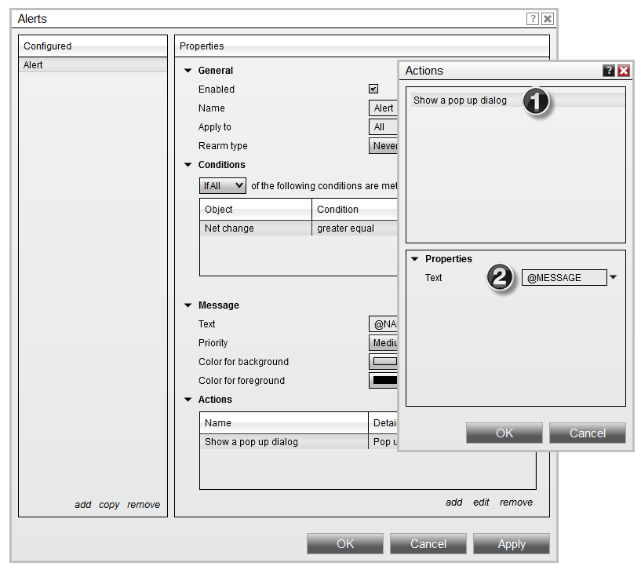
1. In the Actions window, the "Show a pop up dialog" action is selected
2. "@MESSAGE" is entered for the text to be displayed in the dialog. This will populate the dialog with the message entered in the "Message" section of the Alerts window. |
Preparation•Open a chart •Apply a Current Day OHL indicator to the chart OverviewThis alert will trigger when a new High is formed intraday. The image below shows the fully configured alert.
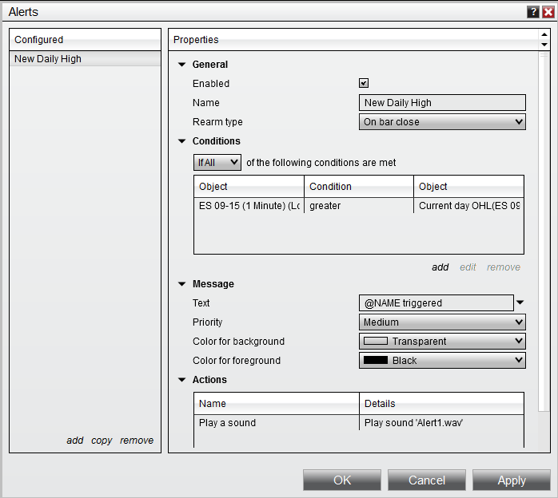
Conditions and ActionsThe Conditions and Actions windows for this alert can be seen below:
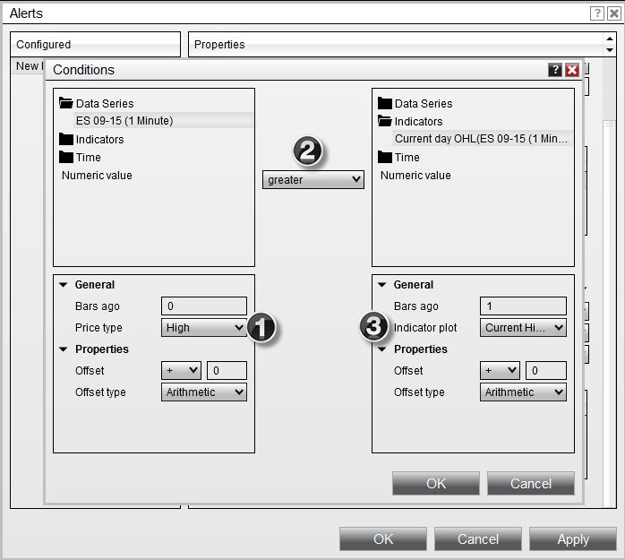
1. The "High" price type is selected for the ES 09-15 instrument in the left panel, with 0 used as the "BarsAgo" parameter
2. The "Greater" condition is selected
3. The Current Day OHL indicator is selected in the right panel, and the "Current High" plot is selected
We now have a condition that translates to "When the current bar's High price is greater than the current day's High (prior to the current bar."
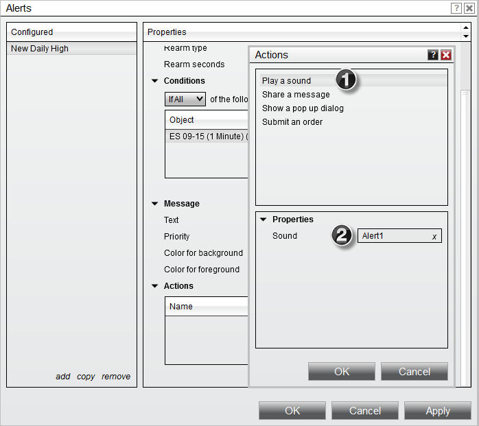
1. In the Actions window, the "Play a Sound" option is selected
2. A sound named "Alert1" is selected to be played when the alert triggers |
Preparation•Open a Market Analyzer •Apply a "Realized Profit/Loss" column to the Market Analyzer (see image below)
OverviewThis alert uses the Market Analyzer's "Realized Profit/Loss" column to trigger an alert when a certain level of loss has occurred. In the image below, the "Realized Profit/Loss" column is configured in a Market Analyzer window.
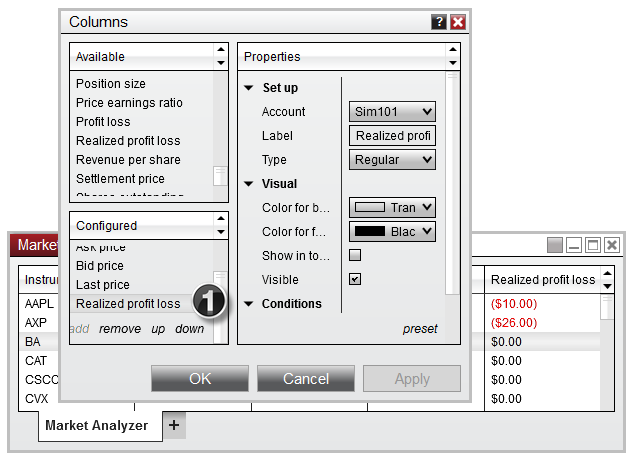
The image below shows the fully configured alert.
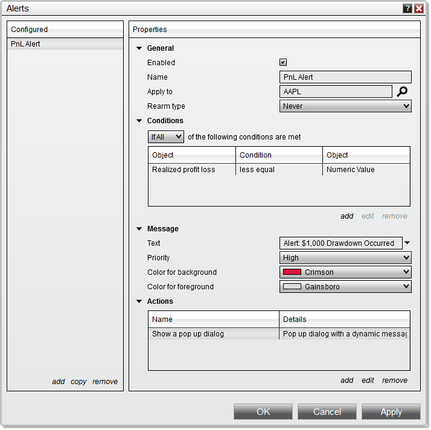
Conditions and ActionsThe Conditions and Actions windows for this alert can be seen below:
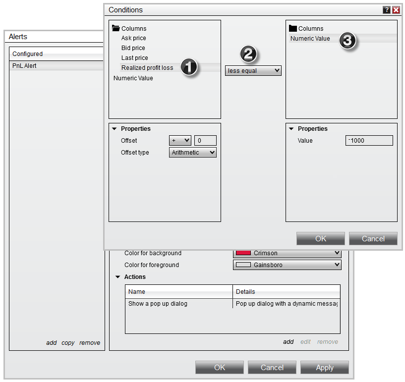
1. In the Conditions window, the "Realized Profit/Loss" column is selected in the right panel. Note that this column was manually added to the Market Analyzer before opening the Alerts window.
2. The Less Equal condition is selected.
3. The Numeric Value property is selected in the right panel, and a value of -1,000 is entered.
We now have a condition that translates to "When the value of the "Realized Profit/Loss" column is -1,000 or less."
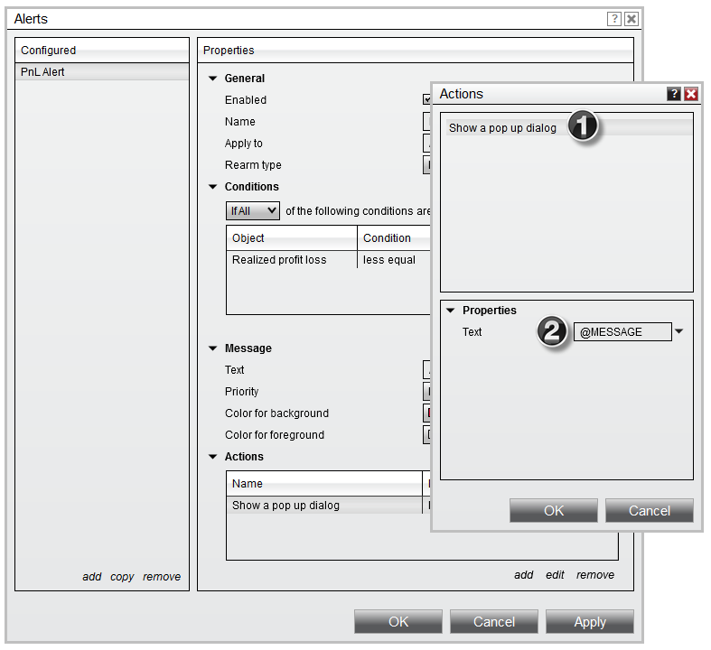
1. In the Actions window, the "Show a pop up dialog" action is selected
2. "@MESSAGE" is entered for the text to be displayed in the dialog. This will populate the dialog with the message entered in the "Message" section of the Alerts window. |
 Price and Fibonacci Retracements
Price and Fibonacci Retracements
Preparation•Open a chart •Draw a Fibonacci Retracements object anywhere on the chart
OverviewThis alert compares the current market price to the 50% line drawn by a Fibonacci Retracements Drawing Tool. The image below shows the fully configured alert.
Conditions and ActionsThe Conditions and Actions windows for this alert can be seen below:
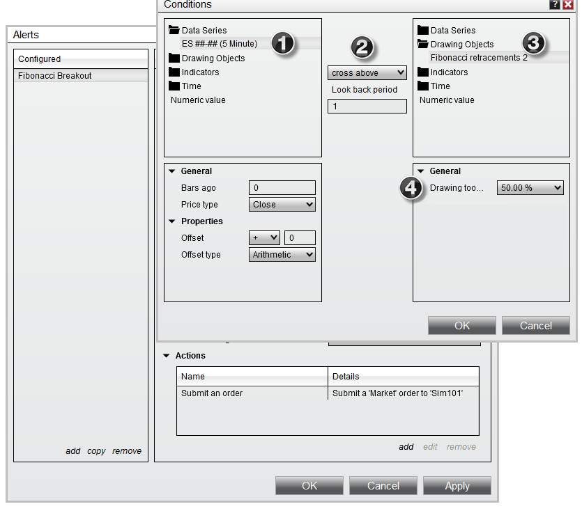
1. The ES ##-## data series is selected in the left panel, and the "Close" price type is selected (which will contain the Last price on the current bar)
2. The CrossAbove condition is selected
3. The Drawing Tool named "Fibonacci Retracements 2" is selected in the left panel. This is a specific drawing object which has already been drawn on the chart to which this alert is attached
4. The 50% line of the Fibonacci drawing object is selected
We now have a condition that translates to "When the current price of ES crosses above the 50% line of the Fibonacci Retracements object on the chart."
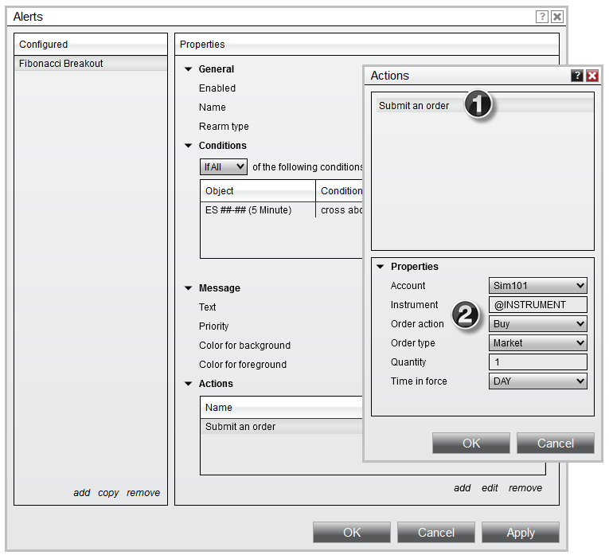
1. In the Actions window, the "Submit an Order" option is selected
2. Parameters for the order are set in the Actions window, as well |
Preparation•Open a chart •Use the Triangle Drawing Tool to draw a triangle on the chart. Make sure that the current market price is within the bounds of the triangle.
OverviewThis alert detects when the current market price breaks outside of a user-drawn shape on the chart. The shape used in this alert can be seen below:
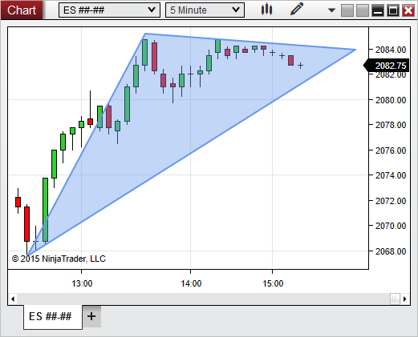
The image below shows the fully configured alert.
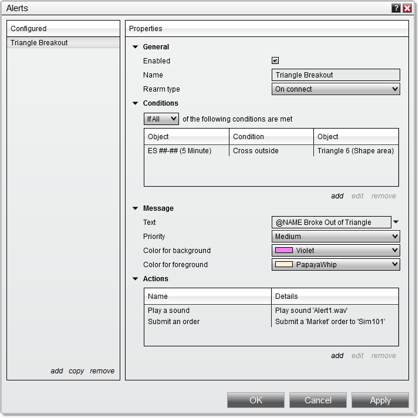
Conditions and ActionsThe Conditions and Actions windows for this alert can be seen below:
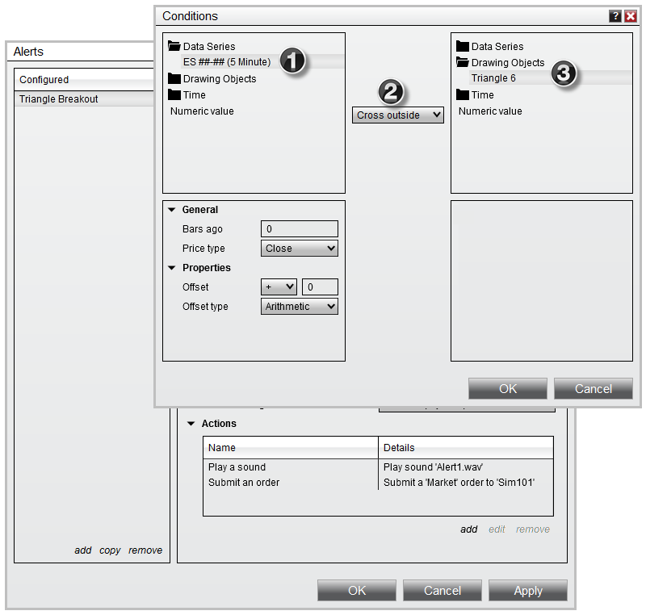
1. The ES ##-## data series is selected in the left panel
2. The Cross Outside condition is selected. This condition populates when a Drawing Object is selected in either the left or right panel
3. The custom-drawn triangle drawn on the chart is selected in the right panel (your object may have a difference name)
We now have an alert that translates to "When the current market price breaks outside of the Drawing Object named 'Triangle 6'."
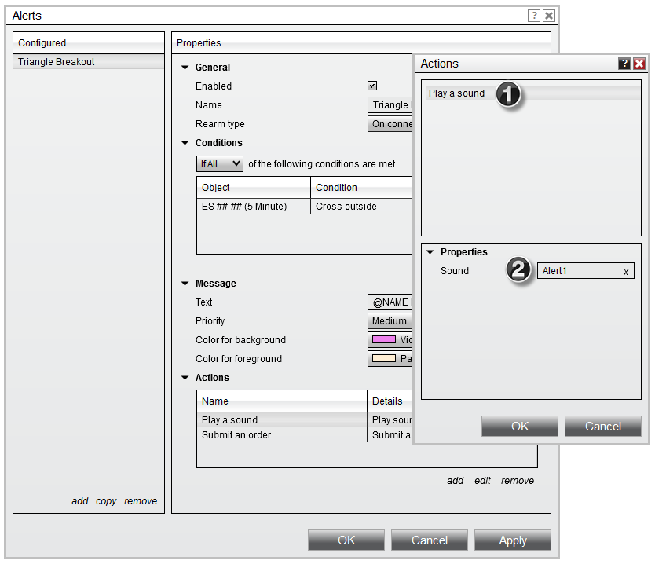
1. In the Actions window, the "Play a Sound" option is selected
2. A sound named "Alert1" is selected to be played when the alert triggers
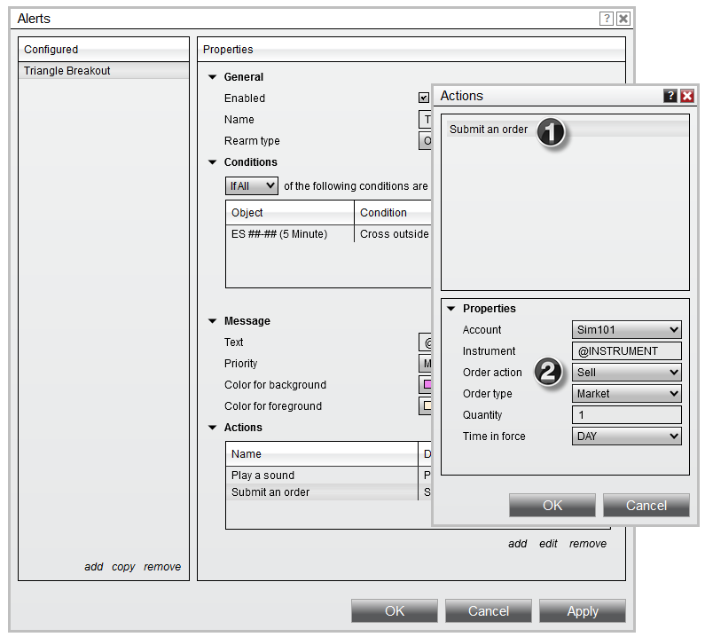
1. In the Actions window, the "Submit an Order" option is selected for a second action
2. Parameters for the order are set in the Actions window, as well. We now have two actions associated with this Alert. |
Preparation•Open a chart
OverviewThis alert is based upon the timestamps of bars on a chart. The alert will trigger when the timestamp of the current bar is greater equal to 2:15pm. The image below shows the fully configured alert.
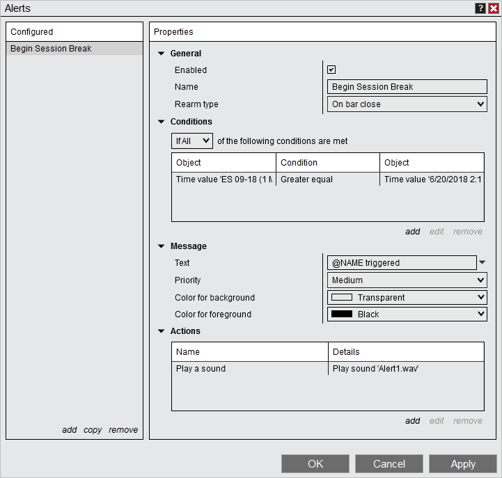
Conditions and ActionsThe Conditions and Actions windows for this alert can be seen below:
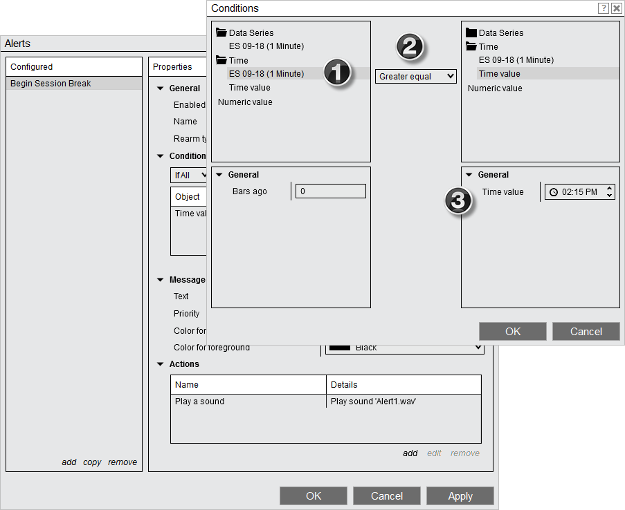
1. The ES 09-18 data series is selected in the left panel under the Time folder
2. The "Greater equal" condition is selected
3. The "Time Value" property is selected in the right panel, and a time of 2:15pm is entered directly below
We now have a condition that translates to "When the time stamp of the current bar on the ES data series is greater equal to 2:15pm." This means the alert would trigger at about 2:14:01pm since bars are timestamped on the bar close time.
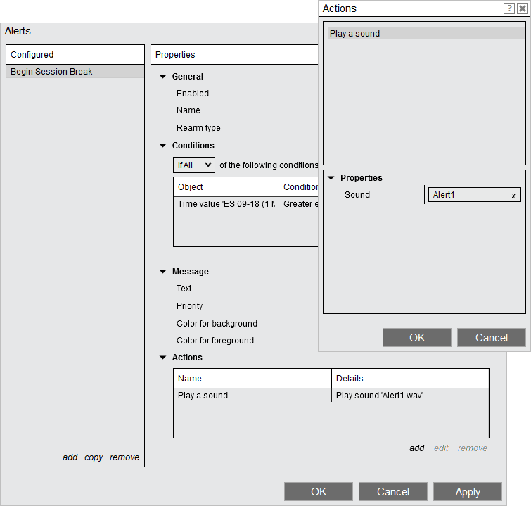
1. In the Actions window, the "Play a Sound" option is selected
2. A sound named "Alert1" is selected to be played when the alert triggers |
 Conditions for custom indicators
Conditions for custom indicators
Preparation•Open a chart •Apply a custom indicator to the chart oThis example will use a custom indicator which is not pre-loaded in NinjaTrader. You will not have access to the PriceVol indicator in your installation, but this process can be used with any custom indicator that you havee developed
OverviewThis alert compares the current market price and the pre-built VOL indicator to different plots of a custom indicator developed with NinjaScript. In this example, the custom indicator is named "PriceVol." This alert will trigger when the current value of the VOL indicator crosses above a historical average of volume calculated by PriceVol, if the current market price is greater than the instrument's 52-week High (also calculated by PriceVol). The image below shows the fully configured alert.
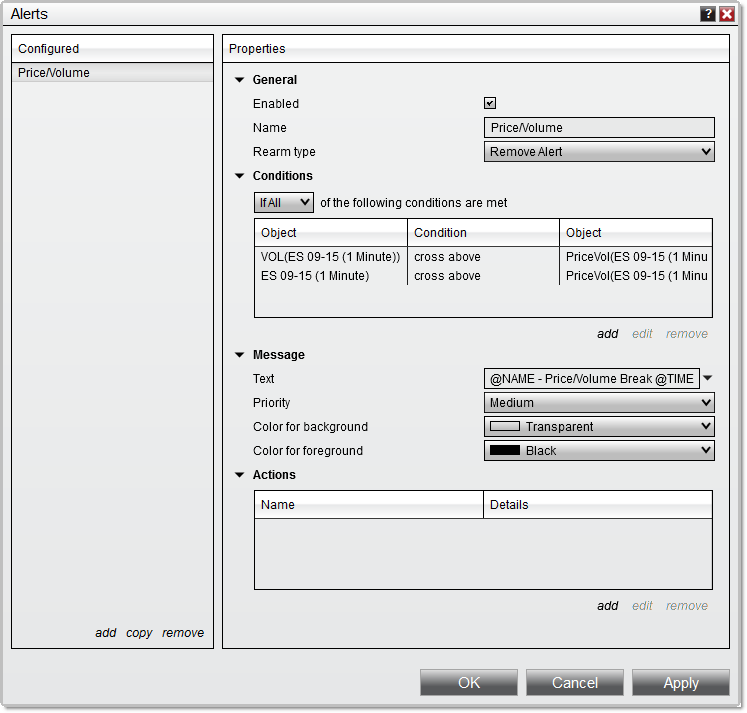
Conditions and ActionsThe Conditions and Actions windows for this alert can be seen below:
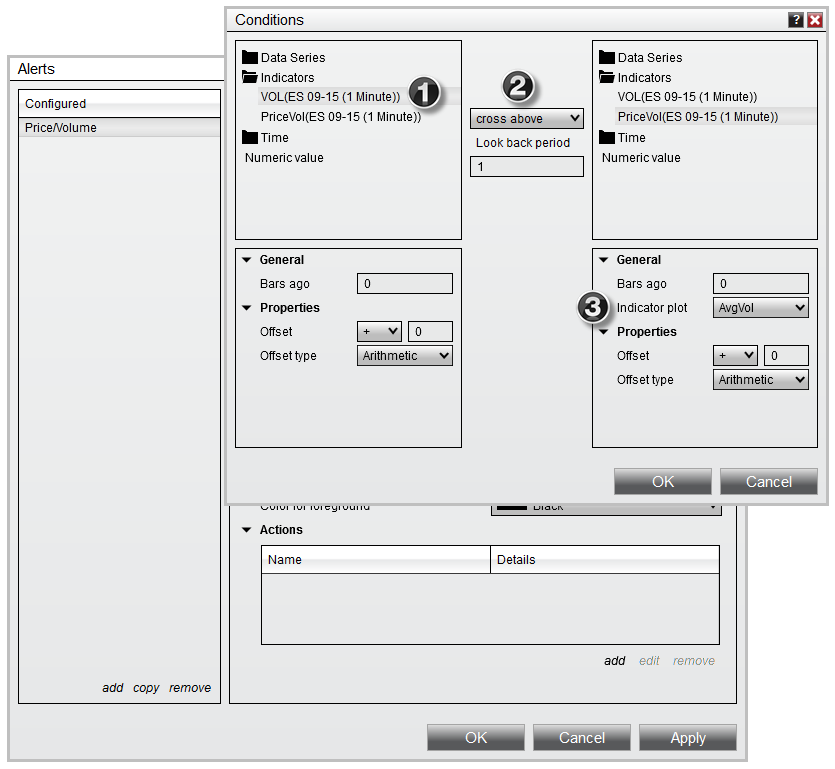
1. In the Conditions window, the VOL indicator is selected in the left panel
2. The Cross Above condition is selected.
3. The AvgVol plot of the PriceVol indicator is selected in the right panel. For this custom indicator, the AvgVol plot contains a 14-period average of volume
We now have a condition that translates to "When the current volume crosses above the 14-period average of volume."
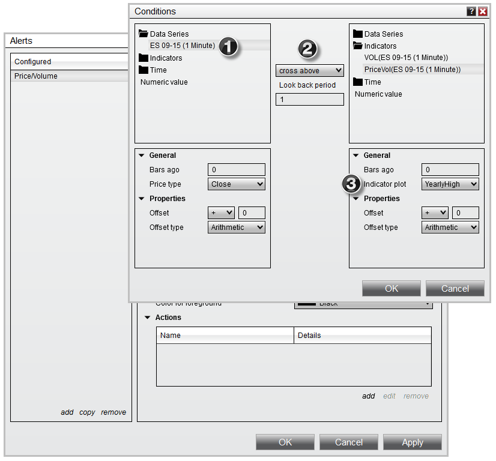
1. In the Conditions window for the second condition, the primary data series applied to the chart is selected in the left panel
2. The Cross Above condition is selected, just like the first condition
3. The YearlyHigh plot of the PriceVol custom indicator is selected in the right panel. This contains the 52-week High for the instrument.
We now have a second condition that translates to "When the current market price crosses above the instrument's 52-week High."
Since this alert does not define any actions, it will simply display the specified message in the Alerts Log window. |